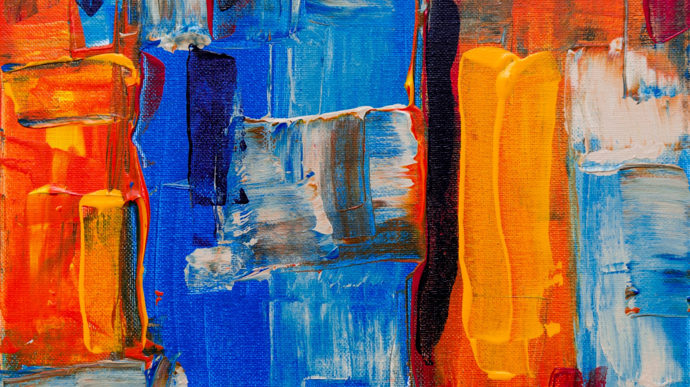

Mike Bernal was born in Cuba. At the age of 10, he moved to the U.S. with his parents and three siblings. It was a bittersweet experience for him. Although he had to leave behind a colorful country steeped in cultural diversity, he was excited to explore a new land. Mike currently works full-time as a professional artist in his studio which he built in his home in Plantation, Florida. His art is in several private collections locally and throughout the U.S. From an early age art has held a special place in Mike’s heart. His father was a major artistic influence and ignited Mike’s passion for creativity. With intense fascination Mike closely observed his father as he carved animals from wood, created paintings and drawings, and built furniture. He credits his father for having taught him many fundamentals about artistic expression. Mike grew up and attended school in Miami, Florida. After graduating from high school, he enrolled in college to pursue his interest in architecture. Shortly thereafter, he joined his father in the construction industry. This environment stimulated his imagination and offered him the opportunity to expand his visual perception about form, design, and structure. During that time, his interest with utilitarian objects and craftsman tools and the beauty of their forms emerged. The history of these objects and the stories they behold have provided inspiration for Mike’s current series of still life paintings and serve as predominant subjects of interest. Mike attended the Chiaroscuro Atelier in Doral, Florida. He is also a member of the National Oil and Acrylic Painters’ Society.